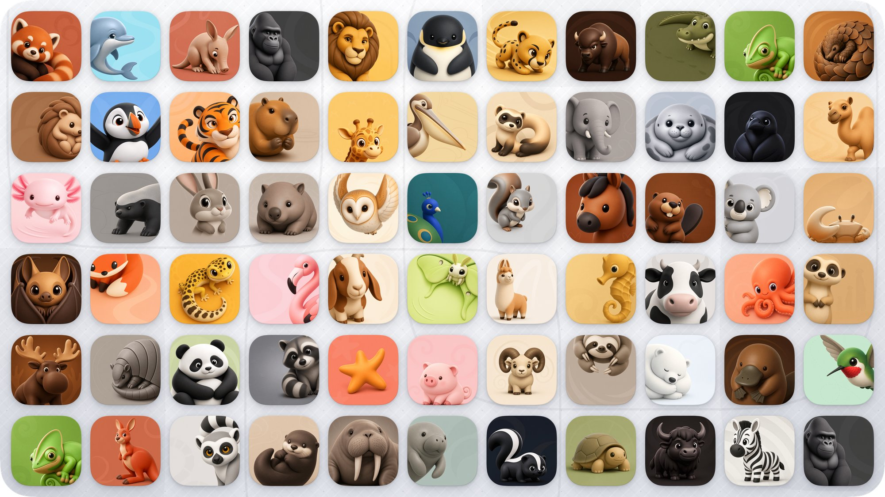
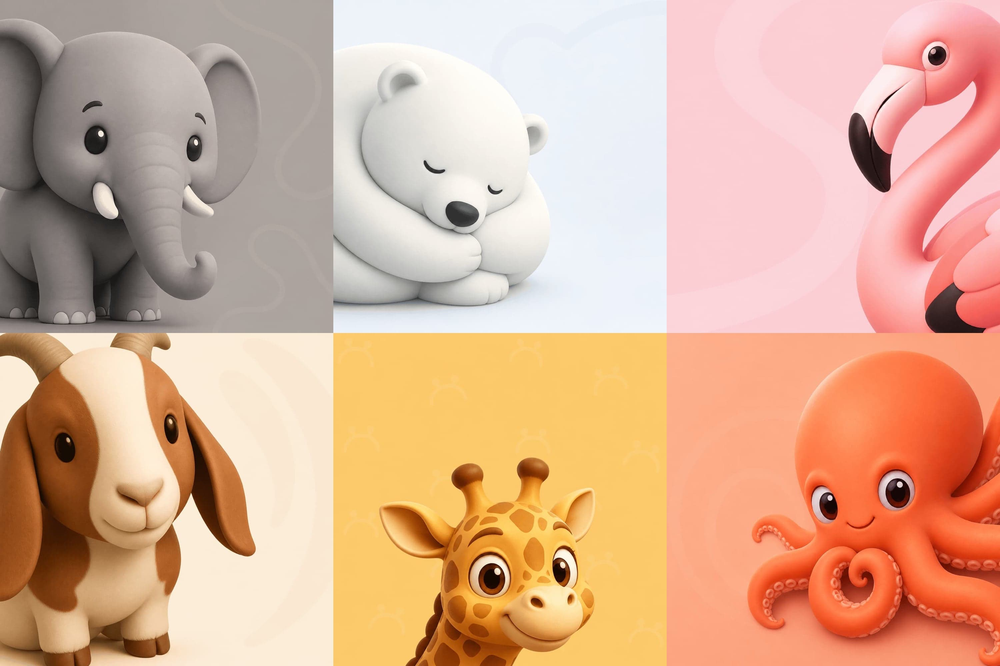

Rhino
An off-center gray rhinoceros with one orange horn accent.
Owner-approved native Sunburst image, 2048 × 2048; finishing 02. Local adoption only; publication is separate.
No previous independent Logo existed; the prior UI used a generic dumbbell icon.
Size checks


At 24/16 px, the silhouette and dominant color carry recognition; fine cloth or polygon details soften. Small UI and browser marks use transparent foregrounds without a tile or another mask.
Application roles
Transparent 24 px expanded or collapsed navigation mark.
Illustrative identity specimens, not proof of a released application.
Native palette evidence
Independent background and placement recipes: presentation.json. Source UI tokens remain unchanged.
Transparent edge checks


Downloads and provenance


Exact prompt
A distinctive rhinoceros HEAD CLOSE-UP for Rhino. Strongly off-center composition: an expressive head entering the viewfinder, balanced by generous negative space. Keep the species unmistakable. Connected, irregular flat polygon facets with crisp shared edges. A coherent, restrained overall color palette: give the rhinoceros one dominant muted color family, with tonal variation defining the facets. Emphasize ONLY ONE small localized area with a richer contrasting color. No rainbow distribution, scattered bright patches, multicolored ears or competing color accents. Let the model choose the dominant hue, angle, gesture and placement of that single accent; the head carries the identity. References 1 and 2 guide only the asymmetric composition and breathing room. Reference 3 guides only connected flat fragmentation, not its palette or accessory. One native 2048 by 2048 illustration on uniform white, without text, a background tile or cast shadows.
Ordered references


Reference order and exact hashes are preserved in request.json; reference assets do not establish product identity or palette.
Owner approval · Generation receipt · Native samples · Checksummed finishing archive